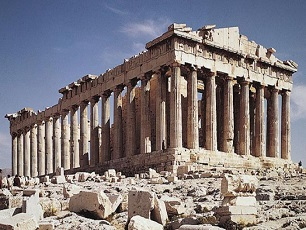

Pré
Renascentismo
A arte pré-renascentista é
marcada pela falta de profundidde na pintura.
{kind=link}
A virgem de Ognissanti, 1310
Giotto di Bondone"Suas volumosas proporções e o grande espaço ocupado pela virgem, em relação aos demais personagens, são propositais. Têm o objetivo de mostrar a grandiosidade da Mãe do Salvador".
{kind=link}
O Sonho de Joaquim, Capela Scrovegni, 1305
Giotto di Bondone"Ana já carrega Maria em seu ventre. Os dois, num terno abraço, parecem se isolar dos outros à sua volta".
{kind=link}
A Anunciação, 1333
Simone Martini"Em sua composição, Maria encontra-se majestosamente assentada em sua cadeira decorada. Encontra-se visivelmente surpresa com a chegada do anjo. Segura na mão esquerda um livro vermelho, entreaberto pelo polegar, como se o estivesse lendo anteriormente".
Renascentismo
Pinturas da época do renascentismo são marcadas pela profundidade,
elas passam a impressão de que a tela possui três dimensões.
{kind=link}
{kind=link}
{kind=link}
Esto é o número de ouro ou φ
O número de ouro pode ser obtido de diversas maneiras, ele equivale a aproximadamente 1,618033.
O número ouro ou φ(phi) pode ser calculado de diversas maneiras, uma delas é pela sequencia de fibonacci, onde a divisão de um termo pelo anterior tende a este numero. A proporção áurea pode ser encontrada em vários lugares na natureza, e as formas da natureza que respeitam essa proporção são ditas as mais bonitas, pintores e escultores então começaram a usar desta proporção em suas obras.
A proporção áurea
em obras de arte
O número φ reccebeu este nome em homenagem a Fideas, um dos escultores do Partenon.
Devido a tal beleza que a proporção áurea demonstrava, diversos outros artistas tanto antigos quanto atuais, usaram desta em suas obras.
-

Partenon
Fideas
Aproximadamente 447 a.C."Erguido no século V a.C. na Acrópolis, uma montanha localizada no centro da cidade de Atenas, e cuja estrutura, apesar do tempo, conflitos e poluição, ainda se encontra preservada. A palavra Partenonsignifica "a sala da virgem", e o objetivo de tal edifício era prestar uma homenagem à deusa Atena".
-
Composição em vermelho, amarelo, azul e preto
Piet Mondrian
1921"Era evidente que os retângulos como todas as formas, tratam de prevalecer uma sobre as outras e devem ser neutralizadas por meio da composição. Em definitivo, os retângulos nunca são um fim em si mesmo, mas uma consequência lógica de suas linhas determinantes que são contínuas no espaço e aparecem espontaneamente ao efetuar-se a cruz de linhas verticais e horizontais".
{kind=link}
{kind=link}
{kind=link}
A arte em
Geometria
Se você acha que a arte é só feita com proporção áurea ou profundidade, você está errado.
A geometria na arte pode se dar de maneira diferente da profundidade.
-
Mona Cat
Romero Britto
2004"A Mona Cat é como se fosse um Tangram, quebra-cabeça chinês, que se utiliza da figura geométrica para representação e abstração de imagens. O retrato de Mona Lisa, ressignificado através desta geometrização e com texturas gráficas diferentes faz parecer que quaisquer estruturas são capazes de conceber algo semelhante à Mona Lisa original".
{kind=link}
{kind=link}
{kind=link}